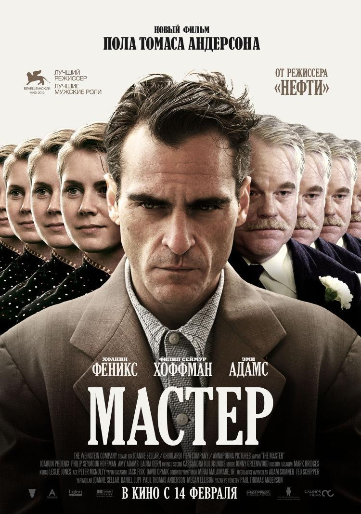

24 Июля
25 Июля
26 Июля

Мастер
[18+]
21:30–23:30
2012
Драма
США
Пол Томас Андерсон
Русский
Демобилизованный моряк с загадочным прошлым не может найти места в послевоенной Америке. Он меняет одну работу за другой, пока случайно не знакомится с харизматичным создателем религиозного культа, известным писателем и философом. К удивлению приверженцев модного учения, их гуру делает агрессивного маргинала своим ближайшим помощником. По мере того как новая вера завоевывает поклонников, бывший бродяга начинает задаваться вопросами о том, во что он верит, и кем является его наставник на самом деле. Но некоторым тайнам лучше оставаться нераскрытыми…

25 Июля